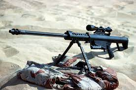

Object-fit helps your web page because it allows you to make your images fit into your page better. By keeping the aspect ratio it allows you to keep your image looking nice.
The M82 is a short-recoil semi-automatic firearm. When the gun is fired, the barrel initially recoils for a short distance (about 1 inch (25 mm)), while being securely locked by the rotating bolt. After the short travel, the lower part of the accelerator arm, held by the receiver upper part, is already hinged in the bolt carrier and the middle portion strikes it back to the barrel by a rod placed in the bolt carrier, transferring part of the recoil energy of the barrel to the bolt to achieve reliable cycling and unlock it from the barrel. The bolt is unlocked by turning in the curved cam track in the bolt carrier. Then the barrel is stopped by the combined effect of the accelerator, buffer spring, and the muzzle brake and the bolt continues back, to extract and eject a spent case.[clarification needed] On its return stroke, the bolt strips the fresh cartridge from the box magazine and feeds it into the chamber and finally locks itself to the barrel. The striker is also cocked on the return stroke of the bolt. The gun is fed from a large, detachable box magazine holding up to ten rounds, although a rare twelve-round magazine was developed for use during Operation Desert Storm in 1991.
